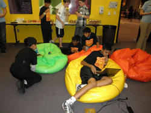
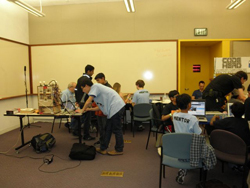

ABOUT
Wunderkinds
For Willie Yee, 12, the event is like Christmas in May; it's the reason he signed up so quickly. "I like programming," says the San Jose 7th grader. "But I really want to learn more complex commands for some programming languages."

Hack the Future is fashioned on SuperHappyDevHouse, where the wunderkinds who fancy creation over computer cracking talk tech, swap blue-sky ideas and collaborate to come up with "the next big thing." Hack the Future is a one-day party and hackathon for youth in grades 5-12, to show them what it's like to be a hacker and see if it's for them.
The mentors don't tell students what to do, but provide a variety of starting points and suggestions for how the students can direct their own learning in technology. Students are free to work on whatever they want. Mentors keep students from getting stuck, and show the way forward when they can't find it.

The idea to gather youngsters for an all-day techie confab was a no-brainer, says Joe Mathes, startup engineer and Hack the Future co-creator. "This is the first chance many kids will have to enter the exciting, advancing field of technology. Programming is literacy. To be great, you have to start when you're young, and you have to learn it from a native speaker," Mathes says. "So, as professionals on the cutting edge, we wanted to teach what we know straight from the front lines."
And if Mathes has his way, he'd like to keep delivering presents. He has big plans to make "Hack the Future" a recurring event, one that might even spawn a hacker space for youth around the Bay Area, across the country and abroad. "I expect we'll take some kids who have the creative spark to start hacking the future, and we'll show them how to continue teaching themselves through the rest of their lives," he says.